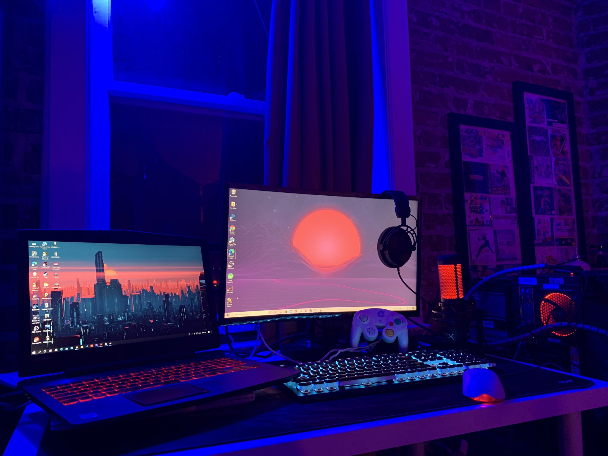

My new journey as a self-taught web developer
After a poor performance in college, I decided to become a college
drop-out and search for a career in the tech industry. With the
consistent growth of technology, I believed there were only positives
in entering this field.
January 25, 2023

How I stay committed to learning
Fortunately, I have relatives who were already in this space and were
willing to support and guide me along my journey to find a career.
Through their support, I was given the opportunity to move to a
different state and put myself in an environment where I would study
like it was my full-time job. This studying structure allowed me to
spend majority of my week learning how to code.
The only downside was that I had to sacrifice my time with family and
friends in my hometown. Initially, I was feeling homesick, but after a
few months it all went away.
How I got started
Initially, I had the intentions of becoming a backend-developer, so I
began learning how to write Python through an open Harvard course,
"CS50P". That took me about a month to get through and learn the
basics of Python. After the course, I felt like I needed to learn more
of the fundamentals, so I went back to learn a more general comp-sci
course, "CS50." After going through majority of the course and working
a little on the frontend languages, I enjoyed it more and decided to
switch career goals to frontend developer. Now, I am here learning
frontend languages through Scrimba working on this solo project.